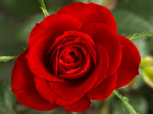

A rose is a woody perennial flowering plant of the genus Rosa, in the family Rosaceae, or the flower it bears.[1] There are over three hundred species and tens of thousands of cultivars.[1] They form a group of plants that can be erect shrubs, climbing, or trailing, with stems that are often armed with sharp prickles.[1] Flowers vary in size and shape and are usually large and showy, in colours ranging from white through yellows and reds.[1] Most species are native to Asia, with smaller numbers native to Europe, North America, and northwestern Africa.[1] Species, cultivars and hybrids are all widely grown for their beauty and often are fragrant. Roses have acquired cultural significance in many societies.[1] Rose plants range in size from compact, miniature roses, to climbers that can reach seven meters in height.[1] Different species hybridize easily, and this has been used in the development of the wide range of garden roses.[1]